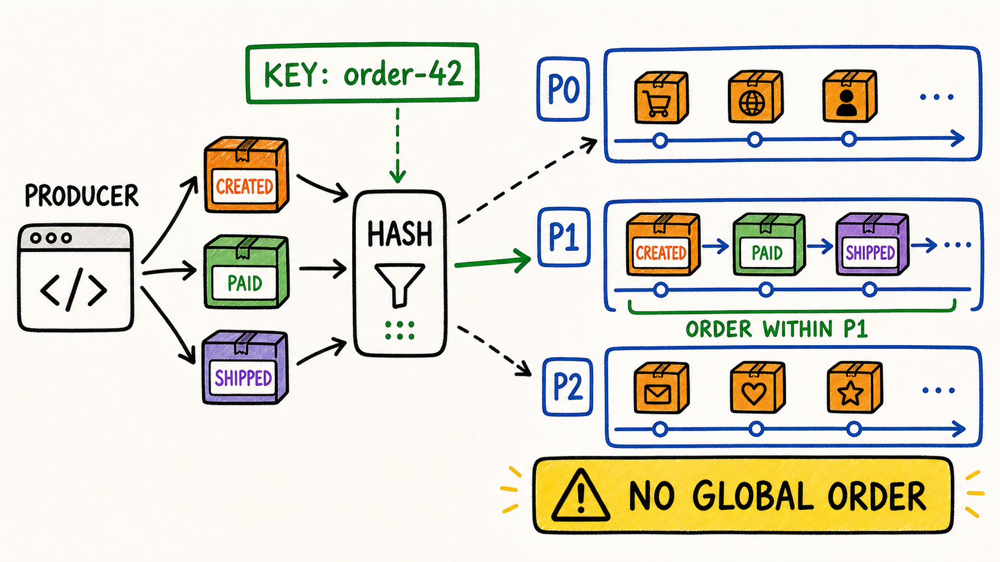

Chọn key
Chọn business identity phù hợp, ví dụ orderId.
Một event không chỉ “đi vào topic”. Producer phải chọn partition. Key tốt giữ lịch sử của cùng một business entity trên một timeline; key tệ có thể phá ordering hoặc tạo hot partition.
Chọn business identity phù hợp, ví dụ orderId.
Dự đoán cùng key đi cùng partition khi số partition không đổi.
Phát biểu đúng: thứ tự theo từng topic-partition.
Nhận ra low-cardinality key và hot key.

Producer biến key thành bytes trước khi partitioner quyết định.
Có key: default logic chọn partition dựa trên hash của key. Chỉ định partition thì lựa chọn đó thắng.
Broker append record vào log của một topic-partition và cấp offset trong partition đó.
Nhập key và thử gửi CREATED → PAID → SHIPPED. Mô phỏng dùng Java String.hashCode() để bạn dễ tự viết lại; đây không phải bản sao thuật toán byte-hash mặc định của Kafka.
Cùng key + cùng số partition → cùng kết quả route trong mô phỏng.
So sánh key đúng là orderId với key sai là eventType. Các event được gửi theo một thứ tự, nhưng nếu chúng vào nhiều partition thì không còn một consumer lane duy nhất cho order đó.
order-42 dùng key order-42.CREATED, PAID, SHIPPED; tải có thể trải đều nhưng lịch sử một order bị tách.Record cũ không di chuyển. Nhưng phép route với số partition mới có thể đưa record mới của cùng key sang partition khác.
Phân 60 event vào bốn partition. So sánh key có cardinality cao với một khách VIP chiếm đa số và một key hằng.
Có đủ nhiều giá trị key để trải tải không?
Một vài key có traffic vượt xa phần còn lại không?
Có thật mọi event của key đó bắt buộc tuần tự không?
Bài này luyện record, enum, validation, hash và Math.floorMod. Chương trình chỉ là mô hình học tập, không giả làm Kafka partitioner thật.
Bắt đầu trong một Maven project Java 21 và đặt code dưới src/main/java.
src/main/java/com/dream/learning/kafka/partitioning, rồi tạo OrderEventType { CREATED, PAID, SHIPPED }.
Invariant: orderId không blank, sequence dương và type không null.
public record OrderEvent(
String orderId,
long sequence,
OrderEventType type) {
public OrderEvent {
// TODO: validate ba invariant
}
}Dùng Math.floorMod, không dùng Math.abs(hash) % n vì Integer.MIN_VALUE là edge case.
public final class PartitionPlanner {
private PartitionPlanner() {}
public static int partitionOf(String key, int partitionCount) {
// TODO: validate key và partitionCount
// TODO: floorMod(key.hashCode(), partitionCount)
throw new UnsupportedOperationException("learner implementation");
}
}In bảng key | hash | partition khi N=3 | partition khi N=4 cho ít nhất 20 order ID.
Cùng key/cùng N ra cùng partition; partition luôn trong 0..N-1; key khác có thể collision; đổi N có thể remap.
Viết 5–7 câu phân biệt deterministic routing, collision, ordering theo partition và phân bố tải.
Dùng project Spring Kafka lab riêng. Mục tiêu là nhìn metadata thật, không đoán từ key.
orders.partitioned.v1, partitions 3, replication factor phù hợp cluster lab.
@Bean
NewTopic ordersPartitionedTopic() {
return TopicBuilder.name("orders.partitioned.v1")
.partitions(3)
// TODO: chọn replicas theo cluster lab
.build();
}Ba trạng thái của một order phải dùng cùng orderId. Ghi lại partition/offset từ SendResult.
kafkaTemplate.send(TOPIC, event.orderId(), event)
.whenComplete((result, error) -> {
if (error == null) {
var metadata = result.getRecordMetadata();
// TODO: log key, partition, offset, sequence
} else {
// TODO: log key và root cause
}
});Dùng ConsumerRecord để không phụ thuộc việc nhớ tên header.
@KafkaListener(
topics = "orders.partitioned.v1",
groupId = "ordering-lab")
void consume(ConsumerRecord<String, OrderEvent> record) {
// TODO: log key, partition, offset
// TODO: log event.sequence() và event.type()
}Gửi sequence 1, 2, 3 cho order-42. Bằng chứng đạt: cùng partition và offset tăng dần.
Gửi order-42 và order-99 xen kẽ. Mỗi order cần giữ sequence riêng; không yêu cầu một global order giữa hai partition.
Tạm dùng event.type().name(). Quan sát lịch sử một order bị tách sang nhiều partition; sau đó trả key về orderId.
Dùng overload chỉ có value. Gửi theo batch và quan sát distribution; không kết luận default là round-robin từng record.
Mô tả topic trước/sau, tăng từ 3 lên 4, rồi gửi lại các key cũ. Record lịch sử nằm nguyên; record mới của một số key có thể sang partition mới.
kafka-topics --bootstrap-server localhost:9092 \
--alter --topic orders.partitioned.v1 --partitions 4Nếu listener đẩy record sang thread pool và xử lý song song, thứ tự hoàn tất business có thể khác thứ tự poll. Log thời điểm bắt đầu/kết thúc để thấy ranh giới này.
key, partition, offset từ SendResult.
key, partition, offset, sequence từ ConsumerRecord.
partition count trước/sau từ CLI describe.
orderId thường là key tốt cho order events?Giải thích vì sao orderId vừa là quyết định ordering vừa là quyết định scale. Sau đó giải thích rủi ro khi tăng partition count.
KafkaTemplate.send(topic, key, value), partition overload và SendResult.